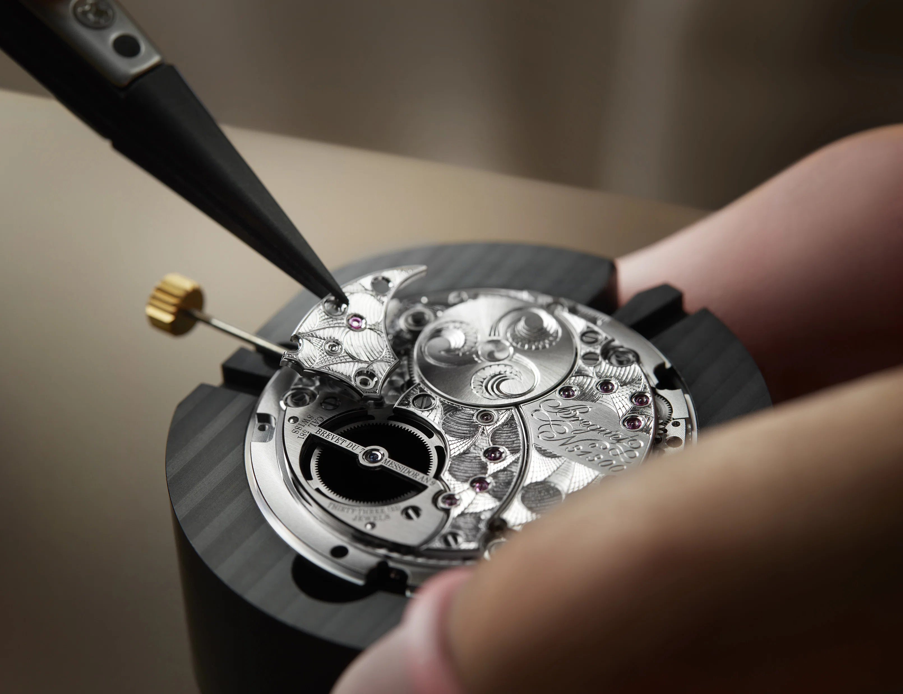
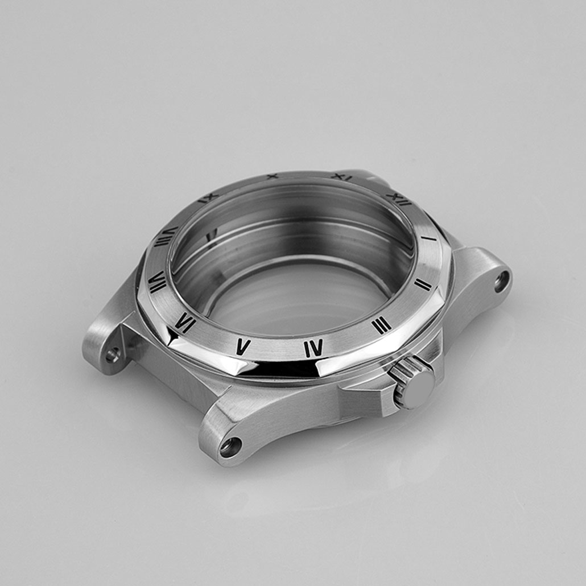
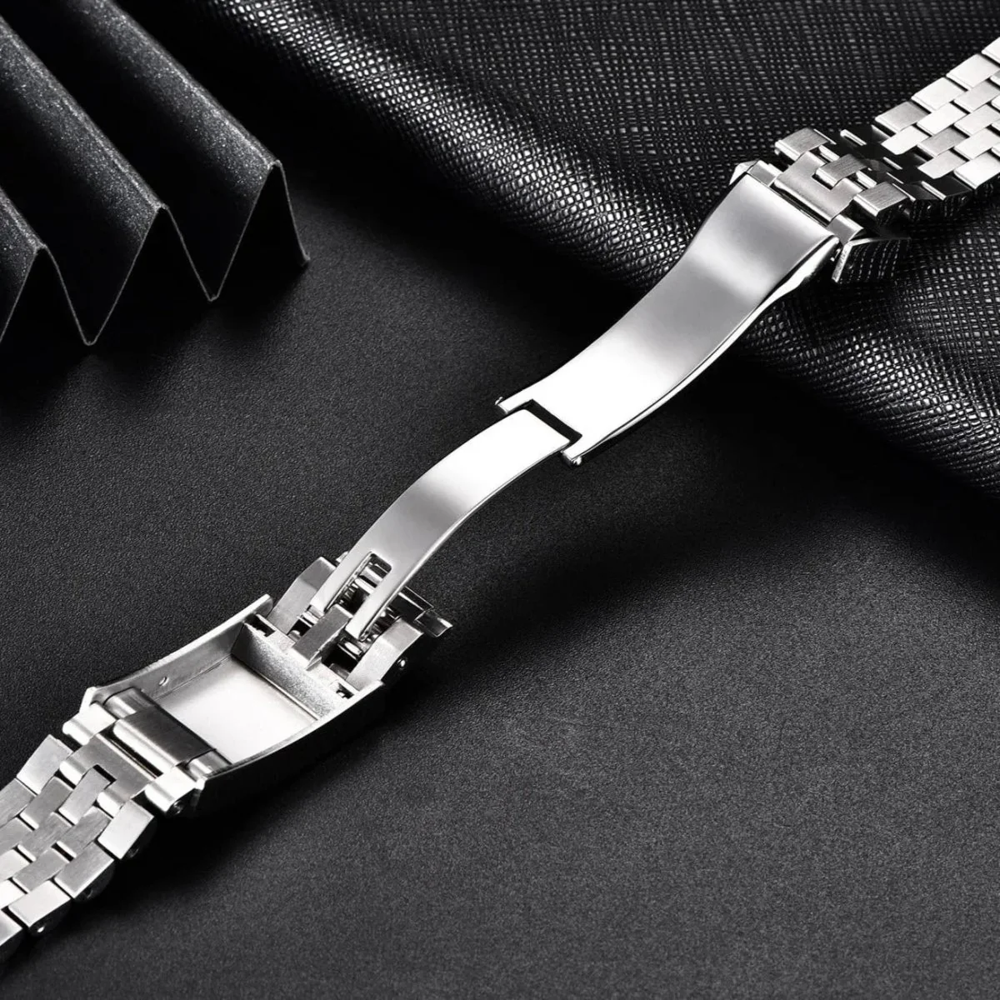

Scroll to take the Calibre 9900 apart, one component at a time.
Every component is made to tolerances measured in microns.
More than 150 moving parts, assembled by hand in a single workshop.
Grade 5 titanium and sapphire crystal, built to be handed down.
Grade 5 titanium, brushed and polished by hand.
Fully wound, the watch runs through a long weekend.
Tested for 24 hours under pressure before it ships.
Each one inspected under magnification.

A column-wheel chronograph with a hand-finished rotor. You can see it work through the sapphire case back.

Milled from a single block, then finished in four stages.

Solid links, pinned rather than pressed, so it can be repaired for life.
Each watch takes fourteen weeks to build. We don't speed it up.
Bridges are chamfered and polished under a loupe, one at a time.
Every watch is checked in six positions and three temperatures.
Our workshop repairs any Chronos watch, whatever its age.